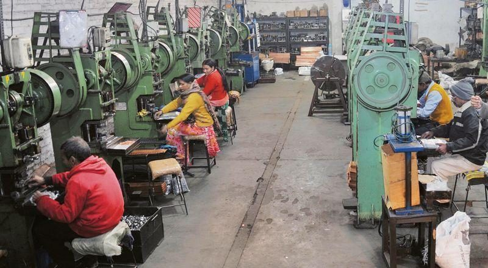
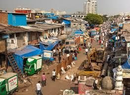
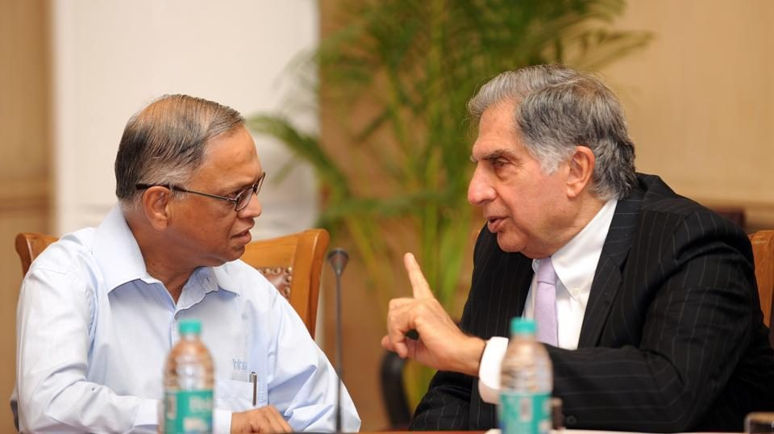
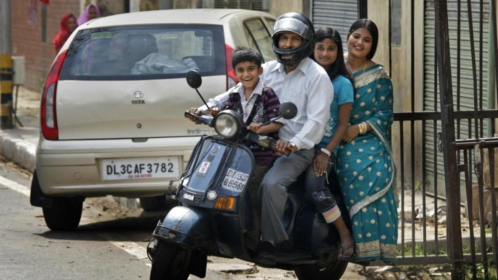
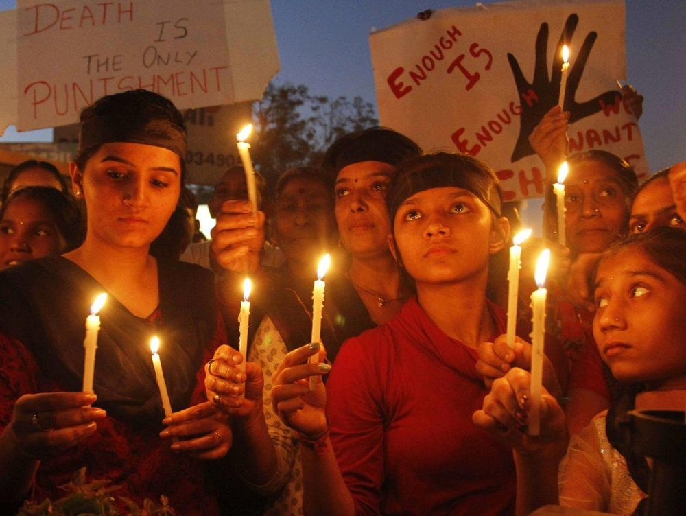
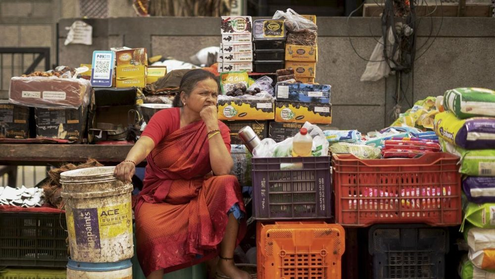
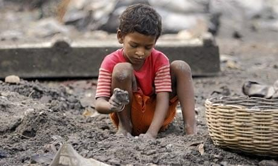

Urban-Industrial Society and Social ClassesHigh priority
Answer class questions by naming the group, its origin in colonial or reform periods, and one caste or globalisation twist.
Chapter map#
- Urban-industrial society
Urban
- Statutory and census towns
- Wirth, Simmel
- Continuum
Urbanisation
- Push and pull
- Over-urbanisation
- Slums
Industry
- Colonial path
- Deindustrialisation
- Post-1991
Classes
- Capitalist
- Middle
- Working
Informal sector
- Insecurity
- Formalisation
- Migration
Unfree labour
- Bonded
- Child
- Legal framework
Exam lens#
The story first#
In simple words#
- Census town = 5,000 people, 400 per sq km, 75% male main workers non-farm; push (rural distress) and pull (jobs) drive urbanisation.
- Indian industry grew under colonial rule; classes: capitalists (trading castes), middle classes (old and new), and an informal working class.
- Informal sector employs most workers; bonded and child labour persist despite Articles 23, 24.
| Term | In plain words |
|---|---|
| Statutory town | Unit defined as urban by statute: municipality, corporation, cantonment board and so on. |
| Census town | Settlement with 5,000 people, 400 per sq km and 75% male main workers in non-agriculture. |
| Over-urbanisation | Urban population growing faster than jobs and facilities. |
| Folk-urban continuum | Constant exchange linking rural folk and urban worlds. |
| Informal sector | Small, unregistered enterprises with insecure work and no social protection. |
| Formalisation | Bringing enterprises and workers into registration, taxation, regulation and protection. |
| Committed labour force | Clark Kerr: disciplined labour detached from traditional loyalties. |
| Bonded labour | Long-term coercive tie of a labourer to an employer through debt or caste duty. |
1 · Urban - Industrial Society#
- Urban - industrial society in India refers to a social formation characterised by the growth of cities, expansion of non-agricultural occupations, and increasing dominance of industry and services in the economy.
- It represents a shift from a predominantly rural, agrarian order to a more complex, differentiated, and mobile social structure.
- Urban spaces become centres of economic activity, innovation, and cultural exchange, while also generating new forms of inequality, anonymity, and social dislocation.
- According to the 2011 Census, 31.16% of India’s population lived in urban areas - more than double the 13.8% recorded in 1941.
- World Bank estimates this share at 37% in 2024, and the Economic Survey 2023 - 24 projects that by 2030, over 40% of Indians will live in urban areas.
- This steady growth highlights the importance of studying India’s urban transition through a sociological lens.
- What is ‘Urban’? In its simplest sense, ‘urban’ refers to towns and cities; while ‘rural’ refers to villages.
- Urban areas are characterized by higher population density, advanced infrastructure, and non-agricultural economic activities.
- The Census of India classifies urban units into statutory towns and census towns, based on administrative and demographic criteria.
2 · Categories of Towns#
- According to the Census of India, there are two main categories of urban areas:
- 1. Statutory Towns: All administrative units that have been defined by statute as urban; like Municipal Corporation, Municipality, Cantonment Board, Notified Town Area Committee, Town Panchayat, Nagar Palika etc. are known as Statutory Town.
- 2. Census Towns: These are settlements that satisfy the following criteria:
- i) a minimum population of 5,000.
- (ii) A density of population of at least 400 persons per sq. km. and (iii) 75 per cent and above of the male main working population being engaged in non-agricultural pursuits.
- A town with a population of one lac and above is known as a city.
- Cities having population more than one million & above are called metropolis or metro cities.
- In general, a big, important and central city is known as a metropolis (literally meaning mother-city).
- A metropolis is a large city which is a significant economic, political, and cultural area for the region.
- It is an important hub for national or international connectivity and commerce.
- In sociological terms, urban society is not merely about spatial concentration but also about a distinct social environment.
- As thinkers like Louis Wirth suggest, urban life fosters urbanism
- - a way of life characterized by rationality, impersonal relations, and social heterogeneity, contrasting with the intimacy and tradition of rural life.
- In his essay “The Metropolis and Mental Life”, Georg Simmel similarly argued that city life encourages rationality over emotionality. in the city, people use their head instead of their heart.
- Though the city provides a liberating atmosphere to the individual, allowing him to free himself from traditional social structures & the dictates of customs; it also makes the city dweller too rational, cold, and indifferent.
- The urban individual becomes detached, calculating, and reserved, a result of constant sensory stimulation and anonymity.
- Urban life promotes rationality and individualism but also leads to alienation, stress, and weakened social bonds.
- In India, megacities like Mumbai and Delhi exhibit both opportunities for mobility and challenges such as overcrowding, inequality, and psychological strain.
- Thus, urban society is often contrasted with the rural society - while the village nurtures community, kinship, and tradition; the city fosters individuality, mobility, and modernity.
3 · Rural - Urban Continuum#
- However, rural and urban areas do not exist in isolation - there is constant movement of people, goods, and ideas between them.
- This ongoing exchange forms a continuum between the folk (rural) and urban (city) worlds.
- The folk - urban continuum thus represents a gradual transition from village life to city life.
- It studies how urban influences - like dress styles, technology, and media - penetrate villages; and how rural values and traditions, in turn, shape urban culture.
- Over time, this interaction transforms villages into towns and towns into cities.
- Folk and urban societies are not sharply divided but exist on a spectrum of social, economic, and cultural change.
- The concept was first elaborated by Robert Redfield in The Folk Culture of Yucatan(1941).
- Redfield viewed folk and urban societies as two poles of a continuum.
- No society fits perfectly at either end; most lie somewhere in between.
- Folk societies, according to Redfield, are small, isolated, non-literate, and homogeneous, marked by kinship-based organization, sacred values, and minimal division of labour.
- Urban societies, by contrast, are large, literate, heterogeneous, secular, and market-oriented.
- Redfield observed that contact with cities gradually changes folk societies: isolation decreases, markets develop, and heterogeneity increases.
- This process represents the transition along the folk - urban continuum.
- His student McKim Marriott extended this framework in the Indian context, showing that cultural interaction between villages and cities was dynamic, producing both continuity and change.
- Redfield further proposed the concepts of Great Tradition and Little Tradition to explain cultural levels within a civilization.
- Great Tradition refers to the literate, reflective culture of elites - priests, scholars, and philosophers - embodied in classical texts and pan-Indian religious systems.
- Little Tradition refers to local, oral, and popular practices-village deities, folk tales, customs, and rituals.
- In India, for example, the epics Ramayana and Mahabharata form part of the Great Tradition, while local deities, Gram Devtas, and regional folk tales represent the Little Tradition.
- The two Traditions are not separate but constantly interact.
- To describe this interaction, McKim Marriott proposed the twin concepts of Universalisation and Parochialisation.
- Marriott’s work ‘Little Communities in an Indigenous Civilisation’ (1955) provides a significant basis to understand the unity and interdependence of various parts of the Indian civilisation.
- Marriott highlights cultural interaction between ‘Great Tradition’ and ‘Little Tradition’ while focusing on festivals celebrated in the small village of Kishangarhi in Uttar Pradesh.
- Universalisation refers to the upward movement of cultural elements from the Little Tradition into the Great Tradition.
- For example, a local goddess like Saurti worshipped for prosperity in Kishangarhi may evolve into the pan-Indian Lakshmi.
- Parochialisation is the downward adaptation of Great Tradition elements into local contexts - for instance, Navaratri transforming into Naurtha in the Kishangarhi village.
- In India, urbanisation has weakened some traditional aspects of caste and kinship but has not eliminated them altogether.
- Rural migrants often move through chain migration, relying upon relatives, caste members and fellow villagers for information, employment, accommodation and initial support.
- Consequently, particular neighbourhoods, occupations and informal economic networks may acquire caste, regional, or community concentrations.
- Caste associations also adapt to urban conditions by providing matrimonial networks, hostels, educational assistance, political mobilisation and business contacts.
- Endogamy ensures the continued importance of caste even where occupational restrictions weaken.
- Thus, rather than simply disappearing, caste and kinship are often reconstituted as networks of social capital in the modern city.
- In conclusion, the rural-urban relationship is better understood as a continuum rather than a dichotomy.
- In India, rural values and structures of such as caste, kinship, and community networks continue to shape urban life, while urban influences including modern technologies and lifestyles transform rural areas.
- The concepts of parochialization and universalization help explain India’s cultural dynamism.
- Rural and urban, and local and pan-Indian, remain interconnected in a continuous process of cultural synthesis.
4 · Industrialization and Urbanisation#


- Industrialization and urbanisation in India are closely related but not identical processes.
- Industrialization refers to the growth of manufacturing and industrial activity, while urbanisation denotes the increase in population living in towns and cities and the expansion of urban settlements.
- Historically, industrialization has been a major driver of urbanisation, as industries attract labour, capital, and infrastructure, leading to the growth of cities.
- Urban growth during the colonial period was linked to the development of railways, port cities, and industrial centres.
- Setting up of factories is one of the key drivers of urbanization However, India’s experience shows that urbanisation is not solely dependent on industrialization.
- As M.S.A Rao points out, India has a long history of urbanization even prior to colonial era industrial development.
- Early urban life dates back to the Indus Valley Civilization, which marked the beginning of organized urban settlements.
- Urbanisation in India has evolved through various historical phases, including the pre-colonial (ancient and medieval) periods of Indian history.
- Some of the reasons for urbanization in pre-colonial India included formation of politico-administrative centres, expansion of trade and commerce, pilgrimage, and the development of centres of higher learning.
- Contemporary urbanisation is also driven by the expansion of industry as well as the service sector, administrative reasons, education, and infrastructure development.
- Some of the recent trends in Indian urbanization are:
- 1. Metropolitan concentration: A disproportionate share of urban growth is concentrated in million-plus cities and metropolitan regions such as Delhi-NCR, Mumbai, and Chennai.
- 2. Peri-urbanisation: Urban growth increasingly extends beyond municipal boundaries into surrounding villages and peripheral areas, creating continuous peri-urban settlements, as visible around NCR and Hyderabad.
- 3. Service-led urbanisation: Unlike classical industrial cities, contemporary Indian urban growth is increasingly driven by IT, finance, education, administration, tourism and other services.
- Bengaluru, Gurugram and Hyderabad illustrate this pattern.
- 4. Emergence of urban corridors and satellite towns: Improved transport and infrastructure have encouraged satellite cities and interconnected urban regions such as Delhi-Gurugram-Noida and Mumbai-Pune.
- 5. Growth of unequal urban spaces: Alongside gated communities, business districts and planned townships, slums and informal settlements continue to expand, producing socio-spatial segregation.
- As a result, India’s urban structure today is a combination of pre-colonial, colonial, and post-colonial influences.
5 · Causative Factors for Urbanisation#
- Urbanisation in India is the result of a combination of demographic, economic, infrastructural, and socio-cultural forces.
- They can broadly be grouped under push and pull factors.
- Push factors are those that compel people to leave rural areas.
- These include lack of livelihood opportunities, declining agricultural productivity, poverty, and the vulnerability of rural life to natural calamities such as droughts and floods.
- Limited access to education, healthcare, and modern amenities also drives people to migrate to towns and cities in search of a better quality of life.
- Rural push is a major factor in India’s urbanization.
- Agrarian distress, landlessness, subdivision of holdings, mechanisation, seasonal unemployment, poverty, and ecological stresses such as droughts and floods push people out of villages even when cities cannot provide secure formal employment.
- Migration therefore represents not merely the attraction of urban opportunities but also an escape from rural deprivation.
- Pull factors are those that attract migrants to urban centres.
- Cities promise employment opportunities in industry and services, higher wages, better infrastructure, access to modern education and health facilities, and greater personal freedom and anonymity.
- Urban areas also create aspirations through the visibility of modern lifestyles and consumer culture.
- In addition to migration, other structural forces contribute to urbanisation.
- The natural increase of population in existing cities adds to their growth, while administrative reclassification of rural areas into urban ones (once they meet census criteria) also expands the urban population.
- The development of infrastructure such as roads, transport networks, and housing stimulates urban growth by linking peripheral areas to urban markets.
- Moreover, industrialisation and the growth of the service sector create new centres of economic activity that gradually evolve into towns.
- The spread of education and modern technologies has also accelerated urbanisation.
- Together, these forces create a cumulative process in which cities grow not only through migration but also through institutional expansion, demographic trends, and the diffusion of modernity into new spaces.
- Amitabh Kundu identifies four key reasons for the growth of urban population in India:
- 1. Natural increase: Rise in population due to the excess of births over deaths.
- 2. Rural - urban migration: Movement of people from villages seeking better opportunities.
- 3. Growth of new towns: Formation of new urban settlements beyond existing city limits.
- 4. Jurisdictional changes: Expansion of city boundaries and merging of nearby areas.
- These factors together explain the rise in urban population, with natural increase historically contributing a major share.
6 · Consequences of Urbanisation#
- Urbanisation in India, while driving economic growth and modernisation, has simultaneously generated a host of social, economic, and environmental problems.
- In has also resulted in over-urbanisation, which refers to a situation where the growth of urban population occurs faster than the expansion of productive employment, housing, infrastructure and civic amenities.
- Unlike the Western experience, where urbanisation was closely associated with industrialisation; Indian cities have often grown without a proportionate expansion of their industrial and economic base.
- Consequently, urban growth may produce unemployment, informal employment, slums, congestion and pressure on basic services.
- The speed and scale of this process-often unaccompanied by adequate planning and infrastructure-have led to multiple urban crises affecting both quality of life and social cohesion.
- G.S. Ghurye highlighted that planners must address problems such as overcrowding, lack of drinking water, traffic congestion, noise, and deforestation in urban spaces to ensure humane living conditions.
- Some of the key problems as a result of urbanization are:
- 1. Infrastructure constraints: Rapid urbanisation has outpaced infrastructure development, leading to housing shortages, inadequate public transport, rising pollution from vehicles and industry, and severe water issues including scarcity as well as urban flooding due to poor drainage and governance.
- 2. Lack of Green Cover: Rapid construction and population growth have eroded parks and open areas, affecting physical and mental well-being, and increasing environmental degradation.
- Dense construction, high energy use, and limited vegetation raise urban temperatures, creating “heat islands.” This leads to higher energy consumption and health risks, especially for the poor who lack access to cooling systems.
- 3. Hygiene and sanitation issues: Rapid urbanisation has led to many towns and cities having inadequate sanitation, poor waste management, and limited access to clean drinking water, especially in slums and informal settlements.
- These conditions contribute to the spread of infectious diseases such as diarrhoea, cholera, and respiratory illnesses, disproportionately affecting the urban poor.
- In addition, infrastructure gaps in toilets, drainage, and waste disposal exacerbate environmental health risks, making sanitation a major public health and inequality concern.
- 4. Overcrowding: The burden of urbanization is disproportionately shared by the million-plus cities.
- Overcrowding in these big cities leads to dehumanisation, where the urban middle class becomes desensitised to suffering.
- 5. Rising Crime and Psychological Stress: Urban anonymity, relative deprivation, and rising aspirations have contributed to higher crime rates.
- Simultaneously, mental health issues like depression, anxiety, and loneliness are increasingly visible among city dwellers.
- 6. Transformation of social institutions: Urbanisation leads to a gradual weakening and restructuring of traditional institutions such as caste, kinship, and the joint family; which once provided social stability and belonging.
- Studies by I.P. Desai, K.M. Kapadia, and A.D.
- Ross show that joint families are giving way to nuclear ones, though functional jointness often persists.
- Likewise, caste and untouchability operate differently in urban areas.
- While urbanization fosters anonymity and occupational mobility, urban spaces are not entirely caste-free.
- 7. Impact of Heritage Tourism Heritage tourism transforms the social and spatial organisation of historic cities such as Varanasi, Jaipur, and Udaipur.
- Conservation and tourism generate employment, revive crafts, improve infrastructure and attach economic value to historic neighbourhoods.
- However, the conversion of residential areas into hotels, restaurants and commercial spaces can raise property values and rents, producing gentrification.
- Public spaces and religious and cultural practices can become commodified for tourists.
- Beautification projects may relocate street vendors and informal settlements.
- Heritage tourism therefore creates a tension as conservation and commercialization reshape urban spaces.
- 8. Urban Displacement Urban development frequently involves displacement through slum clearance, infrastructure projects, road and metro construction, redevelopment, environmental restoration and gentrification.
- The urban poor are particularly vulnerable because many lack secure property titles despite long residence in the city.
- Relocation to peripheral areas may provide formal housing but can distance households from employment, schools, healthcare and social networks.
- Displacement is therefore not merely physical relocation but social dislocation, involving loss of livelihood, community ties and access to the city.
- It highlights unequal claims over urban space and raises questions of “right to the city”.
- Clearly, the social consequences of urbanisation in India extend beyond infrastructure gaps - they encompass transformations in lifestyles, relationships, and values, calling for sociologically informed urban planning and inclusive development.
7 · Slums and Deprivation in Urban Areas#
- Slums are one of the most visible and enduring consequences of urbanisation in India.
- A large proportion of rural migrants, pushed out of villages due to agrarian distress and attracted by urban opportunities, find shelter in slums - informal settlements characterised by overcrowding, poor housing, and lack of basic amenities.
- As per Census 2011, slums are residential areas where dwellings are unfit for human habitation due to dilapidation, overcrowding, poor design, narrow streets, lack of ventilation, light, and sanitation facilities.
- Thus, slums can be seen as direct manifestations of rapid industrialisation and uneven urbanisation, where economic growth has not been accompanied by equitable access to housing and services.
8 · Slums: the persistent urban problem#


- Slums represent the most persistent problem of Indian urban life.
- They are associated with high levels of crime, illness, and mortality, and symbolise the darker side of rapid urban growth.
- The streets and drains of typical slum areas are filthy and congested, but slums are more than just a physical condition-they reflect a distinct social reality shaped by multiple forms of deprivation.
- Residents face acute shortages of basic services such as clean drinking water, sanitation, healthcare, and education.
- Poor housing conditions, malnutrition, and environmental hazards contribute to high levels of disease and mortality.
- Economic deprivation is equally severe, as most slum dwellers are engaged in informal, low-paid, and insecure occupations.
- Social deprivation is reflected in lack of access to formal institutions and opportunities for education and mobility.
- Cultural and recreational opportunities are minimal, often limited to cheap entertainment like cinema and gambling.
- These interlinked forms of deprivation create a vicious cycle of poverty, making it difficult for slum dwellers to escape marginalisation.
- As a result, many slum dwellers suffer from apathy, alienation, and mistrust toward civic authorities, rarely cooperating in local improvement efforts.
- Slums also function as sites of social exclusion, where the urban poor remain physically and socially segregated from the rest of the city.
- They often lack legal recognition, which excludes residents from civic rights and welfare schemes.
- Discrimination based on caste, class, and migrant status further deepens exclusion.
- In many cases, slums are relocated to city peripheries to maintain urban aesthetics, reinforcing spatial segregation.
- At the same time, urban slums reproduce rural social structures - caste networks, kinship ties, and community solidarities continue to shape social organisation within these settlements.
- The problem of slums is universal. Friedrich Engels, in The Condition of the Working Class in England (1845), noted that every great city has its slums. A.R. Desai and S.D.
- Pillai in Slums and Urbanisation (1990) linked slum proliferation to India’s developmental model, which prioritised economic growth without guaranteeing basic rights like work, housing, or education.
- The capitalist pattern of development has led to extreme inequality- on one hand, a small affluent class in luxury enclaves; and on the other, a vast working-class population struggling in informal settlements.
- The sprawling slums are home to the urban poor who survive through informal labour, small trades, or casual work without security or dignity.
- Several empirical studies have highlighted several concerning aspects of life in the slums.
- S.N. Sen in his book ‘Slums and Bastis in Calcutta’highlighted lack of basic amenities necessary for dignified living in the slums.
- P.K. Nambiar’s study found that Chennai slums were located near the water resource, yet slums dwellers didn’t have access to adequate clean water supply.
- Mohsin’s study of slums in Patna concluded that the slum environment had an adverse impact on physical & mental growth of children.
- Victor D’Souza’s study revealed that Chandigarh’s slums were shifted to the outskirts of the city so not to spoil the city aesthetics.
- Studies have also highlighted the strength and resilience of slum dwellers.
- Paul Wiebe’s research on Madras slums in the 1970’s challenged stereotypes that slum dwellers suffer from a “culture of poverty” or social disorganisation, showing instead networks of solidarity and adaptation.
- Kalpana Sharma’s Rediscovering Dharavi (2000) portrays Asia’s largest slum as a space of cosmopolitan resilience where migrants from across India build new lives through determination.
- Recognising the challenges facing slum dwellers, the state has initiated programmes such as Basic Services to Urban Poor (BSUP) under JNNURM and Integrated Housing and Slum Development Programme (IHSDP), aimed at improving housing, water supply, sanitation, and infrastructure in slum areas.
- While these programmes have made some progress, issues of implementation, exclusion, and sustainability remain.
- In conclusion, slums are characterised by abject poverty, adverse living conditions, poor sanitation, lack of privacy and dignity, and high vulnerability to disease and crime.
- Yet, slums are integral to the urban economy and culture.
- They supply cheap labour, house a significant segment of the city’s population, and hold political importance.
- Culturally, they represent spaces of resilience and creativity, where migrants first find a foothold in the city.
- For many, slums symbolise not despair but the hope of mobility-a transitional space between rural deprivation and urban opportunity.
- Slums embody both the failure and the vitality of India’s urbanisation - an outcome of structural inequality, yet also a site of aspiration, adaptation, and human perseverance.
- Addressing slum deprivation requires not only infrastructural improvements but also inclusive urban policies that integrate the urban poor into the formal city, ensuring dignity, security, and opportunities for upward mobility.
9 · Evolution of modern industry in India#
- The process of industrialization in India unfolded in a manner very different from that of Europe.
- While the West experienced industrialization as an endogenous transformation driven by scientific progress, capital accumulation, and technological innovation, India’s trajectory was profoundly shaped by colonial rule .
- Industrialization under British Rule: The British introduced the railways, modern factory system, heavy machinery, and Western education, laying the basic infrastructure for industrial growth.
- Urban centers such as Bombay, Calcutta, and Surat became key nodes of industrial production and trade.
- India was gradually integrated into the global capitalist economy - but in a subordinate position.
- The pattern of industrialization was distorted: India became a supplier of raw materials (cotton, jute, indigo, etc.) and a consumer of British manufactured goods.
- Colonial economic policies disrupted India's older agrarian-artisanal economy.
- The influx of machine-made British manufactures undermined indigenous handicrafts, particularly textiles, producing deindustrialisation.
- This transformation weakened older relations of agriculture and village crafts and led to the pauperisation of artisans and peasants.
- Colonial rule also led to commercialisation of agriculture that linked cultivators to markets, moneylenders and cash-crop production.
- Railways and ports integrated different regions into a colonial market geared substantially towards the export of raw materials and import of manufactured goods.
- Colonial rule also introduced modern transport, factories, banking and communication, which subsequently provided part of the infrastructure for modern industrial development.
- Colonial economic change was therefore simultaneously modernising in institutional form and exploitative in its structural consequences.
- Economic thinkers of the nationalist period - particularly Dadabhai Naoroji in Poverty and Un-British Rule in India (1901)and R.C.
- Dutt in The Economic History of India- developed the “drain of wealth” theory, arguing that colonial policies systematically impoverished India.
- Before colonialism, India contributed around 23% of the world’s GDP, but by the time of Independence in 1947, this figure had fallen to about 4%.
- Likewise, India’s share in world trade dropped from around 27% to less than 2%, indicating large-scale economic decline and deindustrialization.
- Industrial Policy after Independence: After 1947, India faced the challenge of rebuilding its industrial base.
- Gandhi opposed the imitation of Western-style industrialization and instead emphasized village industries , self-reliance , and decentralized production through the promotion of khadi and cottage industries.
- However, Jawaharlal Nehru’s vision, and the Nehru-Mahalanobis model, became the dominant paradigms guiding the Indian state after independence.
- Nehru viewed large-scale, capital-intensive, and state-led industrialization as the path to modernization.
- India adopted a mixed economy, blending elements of the Western capitalist and Soviet socialist models.
- The state assumed a commanding role through centralized planning , public sector undertakings (PSUs), and industrial licensing - a system that came to be known as the License-Permit-Quota Raj.
- While private enterprise was permitted, it remained heavily regulated.
- The economy grew, but modestly, at what economists termed the “Hindu rate of growth”.
- The liberalization reforms of marked a turning point.
- In response to a balance-of-payments crisis, India dismantled the License-Permit-Quota system, opened its economy to foreign investment, and reduced state control over industries.
- The role of the private sector expanded rapidly.
- Over time, economic planning became more indicative than directive, and the Planning Commission was replaced by NITI Aayog in 2015, reflecting a shift toward cooperative and market-driven federalism.
- Today, India’s industrialization continues to evolve - shaped by globalization, technological change, and the debate between state-led development and market-driven growth - reflecting its colonial legacy as well as its postcolonial aspirations for self-reliant modernization.
10 · Industrial Class Structure in India#
- The industrial class structure in India is complex and multi-layered, reflecting both the legacy of colonial capitalism and the evolving contours of a post-liberalization economy.
- It broadly comprises several interrelated groups - the capitalist or entrepreneurial class, managerial and professional classes, small traders and retailers, the expanding urban middle class, and the industrial working class consisting of skilled, semi-skilled, and unskilled labour.
- India’s industrial class structure cannot be understood purely in economic terms; it is deeply shaped by the underlying social structure of caste, kinship, and community networks , which continue to influence access to capital, opportunities, and occupations.
11 · Capitalist Class and Social Structure#


- The origins of the Indian capitalist class lie in the colonial period, when members of traditional trading and moneylending castes emerged as early capitalists.
- They acted as collaborators and intermediaries of the British colonial economy, serving as merchants, traders, and financiers.
- After Independence, their dominance persisted during the Nehruvian mixed economy, where industrial licensing and state patronage reinforced their position.
- However, since the economic liberalization of the 1990s, the social base of capitalism has widened.
- Harish Damodaran, in India’s New Capitalists, notes that business is no longer confined to the traditional Vaishya communities; agrarian and intermediate castes have increasingly entered entrepreneurial roles.
- Indian capitalist class today comprises of both - old money like the late Ratan Tata (right), and new money like N.R.
- Narayana Murthy, the founder of Infosys (right) Yet, this expansion has not been uniform.
- Dalits and Muslims remain underrepresented in large-scale industrial ownership, reflecting the continuing influence of historical exclusion and structural inequalities.
- Thus, while capitalism has expanded, it has done so within the constraints of India’s broader social structure, supporting the view that industrial class structure is a function of social structure.
12 · Caste, Social Capital and Entrepreneurship#
- R. Vaidyanathan, in his bookCaste as Social Capital (2014), argues that caste operates as a form of social capital in India’s industrial economy.
- Caste networks facilitate trust, credit, information sharing, and skill transmission, especially in contexts where formal institutions are weak.
- These networks often function as informal business ecosystems, enabling the growth of enterprises within specific communities.
- Over time, several communities have undergone what may be termed “Vaishyavization”, where castes not traditionally associated with trade and commerce adopt entrepreneurial activities.
- This has led to the emergence of regionally dominant business communities among intermediate and backward castes.
- At the same time, these patterns indicate that economic mobility often occurs through caste-based networks rather than independent of them, reinforcing the linkage between social and industrial structures.
- Thus, India’s industrial class structure reveals a dynamic and interesting interplay between class mobility and caste identity.
- While economic liberalization has widened the capitalist base, caste continues to shape access to capital, opportunity, and business success, making India’s industrial landscape a distinctive blend of modern capitalism and traditional social hierarchies.
13 · Middle Classes in India#
- The middle class in India refers to a broad and heterogeneous social group positioned between the capitalist elite and the working classes, characterised by moderate income levels, educational attainment, and white-collar occupations.
- It is often seen as the carrier of modern values such as aspiration, education, consumption, and civic consciousness.
- However, the Indian middle class is not a homogeneous economic category but a fluid and layered formation , reflecting varied levels of income, occupations, consumption patterns, and self-perception.
14 · Who is the Indian middle class?#


- Conceptually, it includes professionals, teachers, bureaucrats, small entrepreneurs, and service-sector employees.
- According to Sandhya Krishnan and Neeraj Hatekar, the Indian middle class can be divided into three sub-categories: those spending $2-$4 per capita per day (44.6 crore people), $4-$6 (10.8 crore people), and $6-$10 (4.9 crore people), adding up to approximately 60 crore people.
15 · Historical Evolution and Growth#
- The Indian middle class has evolved through distinct historical phases.
- During the colonial period, its emergence was closely tied to the spread of English education and modern professions, with upper-caste groups benefiting disproportionately, as noted by B.
- B. Misra in his book ‘The Indian Middle Classes: Their Growth in Modern Times’.After Independence, the expansion of higher education and growth of the public sector under the Nehruvian model created a stable, salaried middle class, rooted in government employment and professional services.
- A major transformation occurred after the New Economic Policy (1991), which liberalized the economy and opened new opportunities in sectors such as IT, finance, and services.
- This led to rapid expansion and diversification of the middle class, accompanied by rising incomes, consumerism, and global exposure.
- Gurcharan Das links this expansion to India’s integration into the global economy and the emergence of an aspirational, consumption-driven class.
- Thus, the growth and consolidation of the middle class can be attributed to education, state-led development, urbanisation, liberalization, and expansion of the service economy .
16 · Nature of Indian Middle Class#
- The Indian middle class represents a complex and dynamic social formation that cannot be understood as a single, homogeneous category.
- Emerging historically out of colonial modernity and expanding rapidly after liberalization, it occupies a pivotal position between the elite and the working poor.
- Sociologists such as Andre Beteille and Pavan Varma highlight its diversity in caste, region, religion, occupation, and lifestyle, while also noting shared aspirations of education, respectability, and social mobility.
- Some of the defining features of the Indian middle class are as follows:
- 1. Heterogeneous Composition: The Indian middle class is not a single, uniform entity but a highly diverse social formation.
- It includes people belonging to various castes, ethnic groups, religious communities, and linguistic regions.
- Its members are drawn from both tribal and non-tribal backgrounds and occupy varied occupational and social positions.
- This internal diversity reflects the plural character of Indian society itself.
- Sociologist Andre Beteille emphasizes this heterogeneity and argues that, instead of speaking of one “middle class,” it is more appropriate to speak of several “middle classes” in India.
- 2. Both Rural and Urban: The Indian middle class is not confined to cities; it also exists in rural areas in substantial numbers.
- A large segment of the rural middle class has diversified away from agriculture into services, small business, trade, and salaried employment.
- Members of this group share aspirations similar to their urban counterparts-such as stable incomes, private schooling for children, and upward mobility.
- Mariam Aslany notes that about 40% of India’s middle class resides in rural areas and that rural middle-class families often invest heavily in English-medium education to distinguish themselves from the rural poor and secure their children’s future.
- 3. Common Aspirations: Despite internal diversity, the Indian middle classes aspire for financial stability and steady improvement in living standards.
- Members of this class typically seek secure employment, own consumer goods, and value comfort and convenience.
- The culture of consumerism - symbolized by the purchase of private vehicles, homes, and branded products - unites the middle class across regional and cultural divides.
- Pavan Varma, in The Great Indian Middle Class, points out that this group’s common aspirations revolve around material success and a desire for social mobility.
- 4. Centrality of Education: Educational attainment forms the core of the middle-class value system in India.
- Families view it as the key instrument of upward mobility and the most reliable path to advancement.
- Middle-class parents make great financial sacrifices to ensure quality education for their children, especially in English-medium and professional institutions.
- Education not only provides livelihood opportunities but also serves as a marker of status, refinement, and modernity.
- Sociologically, it represents both cultural capital and a means of legitimizing class position.
- 5. Preoccupation with Respectability: A defining trait of the Indian middle class is its deep concern with maintaining social respectability.
- Respectability is associated with proper conduct, professional success, family honour, and adherence to social norms.
- Middle-class families seek to appear decent, cultured, and morally upright in the eyes of society.
- This concern often shapes decisions related to career, marriage, and even everyday consumption patterns.
- 6. Incoherent values system: The Indian middle class occupies a transitional position between traditional and modern values.
- It embraces modern education, technology, and consumerism but continues to uphold patriarchal and community-based norms.
- This produces a deep moral ambivalence - it condemns corruption and nepotism in principle but often practices them in everyday life.
- Sociologist Andre Beteille observes that the values of the middle class are confused and not yet fully crystallized; it is neither fully traditional nor fully modern.
17 · Rural Middle Class#
- As pointed out by Mariam Aslany, the Indian middle class is not exclusively an urban phenomenon.
- Post-Independence transformations in agriculture produced a significant agrarian middle class, particularly among prosperous cultivating and intermediate castes.
- Its emergence can be traced to several processes:
- 1. Land reforms strengthened sections of owner-cultivators and created opportunities for upward mobility among middle peasant groups.
- 2. Green Revolution increased agricultural productivity and marketable surplus in regions such as Punjab and Haryana, enabling prosperous farmers to accumulate capital.
- 3. Commercialisation of agriculture connected rural producers increasingly with markets, banking, transport and agro-industries.
- 4. Expansion of education enabled children of prosperous peasant families to enter administration, professions and salaried occupations.
- 5. Affirmative action facilitated the upward mobility of many intermediate and backward castes, resulting educational, economic and political advancement.
- 6. Rural-urban linkages enabled agrarian families to diversify into transport, contracting, trade, real estate and small industry while retaining agricultural land and village connections.
- The emergence of the agrarian middle class weakened the older dominance of landlords and upper castes and contributed to the rise of dominant cultivating castes such as Jats, Yadavs, Marathas, Patidars, Vokkaligas and others in different regions.
- Economic mobility increasingly translated into demands for education, political representation and state resources.
- It also contributed to the differentiation of rural class structure: while prosperous farmers accumulated land, capital and market opportunities, the marginal farmers and agricultural labourers often remained vulnerable.
- Rural society consequently became increasingly differentiated by class; even as caste continued to influence access to resources.
- The agrarian middle class also strengthened regional and caste-based political mobilisation, expanded consumer culture and educational aspirations in rural areas, and blurred the traditional rural-urban divide as families combined agricultural income with urban occupations, business and property.
- Thus, the emergence of a rural middle class illustrates the transformation of Indian agrarian society from a relatively rigid caste hierarchy towards a more differentiated caste-class structure, although traditional inequalities have not disappeared.
18 · Middle Class Women#
- The position of women within the middle class highlights its internal contradictions.
- On one hand, middle-class women have benefited from education, employment opportunities, and greater visibility in public life.
- They increasingly participate in professions and contribute to household incomes, reflecting processes of empowerment.
- On the other hand, their autonomy remains constrained by patriarchal expectations related to marriage, family, and domestic responsibilities.
- Many women continue to balance modern roles with traditional ideals of femininity.
- This results in a form of superficial emancipation, where freedom exists in petty choices but major life decisions remain influenced by family and social norms.
- For instance, women are choosing clothes that are western and fashionable.
- Nonetheless, they do not have complete freedom to decide on matters related to their occupations and marriage.
- Since marriage and motherhood are considered to be the most important goals, all decisions have to be in consonance with these.
- In the middle classes, parents lay emphasis on their daughters excelling in studies just as they would wish their sons to.
- However, less emphasis is laid on higher education as that is taken to be a hindrance in getting good matrimonial matches.
- A harmonious marital relationship is seen to be dependent on women occupying a sub-ordinate status to men.
- Women are essentially expected to continue to cater to the needs of their families.
- This is viewed as a natural phenomenon. Women do not have absolute freedom to decide on matters concerning selves.
- Thus, it is quite apparent that women in the middle classes are still not self- determining individuals.
- Occupations with flexible timings are preferred for middle class women, making it convenient for them to complete their primary tasks of home management and therefore not facing any form of role conflict.
- Thus, women’s social roles continue to be defined in accordance with traditional expectations, and now also modern aspirations.
19 · New Middle Class in India#
- The emergence of the new middle class in India is closely linked to the liberalization, privatization, and globalization reforms initiated in the early 1990s.
- Economic liberalization expanded opportunities in the private sector, services, finance, and information technology, giving rise to a class with new occupational patterns, lifestyles, and aspirations.
- This group represents a break from the older, state-dependent middle class of the Nehruvian era that was largely employed in government services and public sector undertakings.
20 · The new middle class and Leela Fernandes#

- The new middle class is marked by its urban, English-educated character and its global orientation.
- Leela Fernandes, in her book India’s New Middle Class, identifies this group as primarily composed of the English-speaking urban elite who have benefited from India’s integration into the global economy.
- They occupy positions in multinational corporations, IT firms, finance, and media, and are deeply influenced by global consumer culture.
- Unlike the old middle class, which valued moderation and moral restraint, the new middle class openly embraces consumption and material display.
- Pavan Varma, in The New Indian Middle Class, observes that members of this group are driven by a consumerist ethos and unhesitatingly flaunt their wealth through branded goods, luxurious lifestyles, and conspicuous consumption.
- For them, class identity and purchasing power have become more important than caste identity.
- They are highly connected, and technologically savvy, using consumer choices to mark social distinction and success.
- However, this transformation has also been accompanied by ethical and social consequences.
- Harsh Mander, in Looking Away, argues that the new middle class has been the principal beneficiary of globalization but has simultaneously grown indifferent to its victims - the working class, tribals, minorities, and the urban poor.
- Enjoying the privileges of the liberalized economy, this class often “looks away” from growing inequality, poverty, and social injustice.
- Thus, the new middle class symbolizes both India’s economic transformation and its emerging contradictions-between affluence and exclusion, global modernity and local inequality.
21 · Role of Middle Class in Democracy and Development#


- The Indian middle class has played a decisive role in shaping the political, administrative, and developmental trajectory of the country, though its role has evolved over time in response to wider socio-economic and political changes.
- During the colonial period, the emergence of a modern educated middle class was one of the most significant social outcomes of British rule.
- This class initially collaborated with Europeans in administration, functioning as clerks, teachers, lawyers, and bureaucrats within the colonial apparatus.
- However, the same education that made them collaborators also exposed them to liberal and nationalist ideas.
- As B.B. Misra notes, the middle class later became the vanguard of socio-religious reform movements, leading initiatives such as the Brahmo Samaj, Arya Samaj, and Prarthana Samaj.
- Eventually, it spearheaded the anti-colonial struggle, articulating nationalist ideologies and contributing to the development of modern Indian consciousness.
- After Independence, the middle class responded enthusiastically to the call for nation-building.
- Inspired by Gandhian idealism and Nehruvian socialism, it actively engaged in administration, education, and public service.
- The bureaucratic elite, technocrats, and professionals drawn from this class played a central role in implementing development plans and guiding the newly independent state’s modernization agenda.
- However, by the 1970s, the middle class began to withdraw from active political participation.
- As Pavan Varma observes, increasing disillusionment with corruption, inefficiency, and populism among political leaders led to cynicism and a growing detachment from the political process.
- The middle class turned inward, prioritizing personal stability and material advancement over public engagement.
- In the post-liberalization era, the middle class has undergone a remarkable transformation.
- Economic reforms of the 1990s expanded this class both numerically and geographically, giving it new social and political assertiveness.
- Leela Fernandes notes that the middle class has sought to influence the politico-administrative system through civil society activism, public interest litigation, and urban governance movements-such as campaigns for clean cities, good governance, and anti-corruption drives.
- The middle class has started voicing its concerns, such as for the safety of women, through participation in public protests Pavan Varma argues that the numerical growth and economic clout of this class have translated into significant political influence.
- The rightward shift in Indian politics since 2014 can be partly attributed to the growing support of the middle class, which identifies with aspirations of nationalism, efficiency, and modernity.
- Fernandes, however, cautions that while the middle class has aligned with Hindutva politics in many contexts, its political behavior cannot be entirely reduced to right-wing ideology-it also expresses concern for governance, meritocracy, and development.
- Thus, the Indian middle class has journeyed from being a reformist and nationalist force during colonial rule, to a bureaucratic and developmental elite after Independence, and finally, to an assertive and politically influential class in the globalized era.
- Its evolution mirrors India’s own social and political transformation.
- It has evolved from a small colonial-era stratum into a vast, diverse, and influential social category today.
- Its growth has been driven by education, state policies, and economic liberalization, while its character continues to be shaped by the interplay of class and caste.
- The emergence of the new middle class, in particular, reflects both economic transformation and growing inequalities.
22 · Working Class: Structure, Growth, and Class Mobilization#
- The working class in India represents one of the most diverse and complex segments of society.
- As Sharit Bhowmik notes in his book“Industry, Labour and Society”, the composition of the Indian working class captures the vast heterogeneity of the nation.
- Members of this class come from different castes and communities, include both men and women, and even encompass children and the elderly.
- They belong to varied linguistic and ethnic groups and are employed across multiple sectors such as mining, manufacturing, construction, and services.
- They work in enterprises ranging from micro and small to medium and large industries, and are spread across both the formal and informal sectors of the economy.
23 · Informal Sector#


- A defining feature of India’s working class is the overwhelming dominance of the informal (or unorganized) sector.
- According to the National Commission for Enterprises in the Unorganized Sector chaired by Arjun Sengupta, the informal sector consists of small, unincorporated enterprises employing fewer than ten workers.
- Hawkers and street vendors are an important part of the informal sector of the economy As per the Economic Survey 2021-22, India’s total workforce stood at 53.5 crore, of which 43.9 crore were in the unorganized sector and only 9.5 crore in the organized sector.
- Out of the total, 47.6 crore workers were engaged in informal employment, while merely 5.8 crore had formal employment.
- This indicates that over 90% of India’s workforce is employed informally, highlighting the dominance of the unorganized sector in India’s labour structure.
24 · Problems of Working Class in Informal Sector#
- The problems faced by the working class, particularly in the informal sector, have evolved over time:
- 1. Economic insecurity: Irregular employment, low wages, and absence of income stability 2.
- Lack of social protection: No access to healthcare, insurance, or pensions 3.
- Exploitation: Arbitrary dismissal, wage theft, and poor working conditions 4.
- Weak unionization: Limited collective bargaining power 5.
- Skill constraints: Low levels of training leading to low productivity 6.
- Gender inequality: Women face lower wages and double burden of work 7.
- Migration-related vulnerabilities: Displacement, poor housing, and lack of access to welfare As Sharit Bhowmik points out, informal workers remain highly vulnerable to exploitation and arbitrary dismissal, while also lacking collective bargaining power due to weak unionization.
- These challenges highlight the persistence of structural inequality and vulnerability within India’s labour market.
25 · Formalisation of the Informal Sector#
- Formalisation refers to the process of bringing informal enterprises and workers within systems of legal recognition, registration, taxation, labour regulation and social protection.
- It does not necessarily mean converting every informal worker into a regular salaried employee.
- Instead, it seeks to extend the rights and protections associated with formal employment to workers presently outside them.
- Important dimensions of formalisation include:
- 1. Registration of workers and enterprises, including databases such as the e-Shram portal, which can make previously invisible workers visible to state.
- 2. Extension of social security such as health insurance, accident insurance, pensions, and maternity benefits to unorganised and gig workers.
- 3. Legal protection of labour rights, including minimum wages, safe working conditions, timely payment and protection against arbitrary dismissal.
- 4. Financial inclusion through bank accounts, digital payments, formal credit and registration of small enterprises, reducing dependence on informal moneylenders and intermediaries.
- 5. Portability of welfare benefits is particularly important for migrant labour, whose mobility across states often excludes them from locally administered welfare systems.
- 6. Organisation and collective voice: Cooperatives, unions, SHGs and worker associations can strengthen the bargaining power of domestic workers, street vendors, construction workers, gig workers and other marginalised groups.
- Formalisation can therefore safeguard marginalised workers by providing visibility, legal identity, social security and bargaining power.
- However, excessive compliance costs may also hurt the very small enterprises or push them further underground.
- Formalisation must therefore be worker-centred rather than merely enterprise- or tax-centred, combining simplified regulation with universal social protection.
26 · Caste and Working Class#
- The relationship between caste and the working class has been a major theme in Indian industrial sociology.
- Clark Kerr suggested that modern industry requires a“committed labour force”-one that is disciplined, punctual, and detached from traditional loyalties.
- According to him, India’s entrenched caste and kinship ties hinder the emergence of such commitment and thereby obstruct industrialization.
- However, studies by N.R. Sheth and R.D. Lambert have found that Indian labourers often demonstrate greater commitment to work than their Western counterparts.
- Sheth’s research in Pune factories revealed that workers viewed their employers as Jajmans in a traditional patron-client relationship, performing their tasks with a sense of duty and devotion.
- Recruitment practices in Indian industries also rely heavily on caste and kinship networks, which promote trust, ensure discipline, and help integrate new recruits into the industrial workforce.
27 · Distinction between Working Class and Middle Class#
- At the time of independence, Andre Beteille notes that India had a small middle class and a small working class due to limited industrialization.
- The two were clearly distinct in terms of income, occupation, and lifestyle.
- The working class was associated with blue-collar, manual jobs, lower income levels, minimal education, and a lower standard of living; while the middle class occupied white-collar, non-manual jobs, valued education, and enjoyed higher respectability and comfort.
- However, as industrialization deepened and education expanded, these boundaries have increasingly blurred.
- Rising wages, improved living conditions, and upward social mobility have enabled sections of the working class to adopt middle-class lifestyles and aspirations.
- Many industrial workers today send their children to private schools, use modern consumer goods, and live in better housing-traits earlier associated with the middle class.
- Thus, as Beteille observes, the earlier sharp division between the working and middle classes no longer holds true in contemporary India.
28 · Informal Sector and Labour Migration#
- There is a strong and direct connection between labour migration and the informal sector in India.
- Rural distress, lack of employment opportunities, and seasonal agriculture push workers to migrate to urban areas, where they are absorbed primarily into informal occupations such as construction, domestic work, street vending, and small-scale industries.
- Migration is often circular and distress-driven, with workers moving between villages and cities depending on employment availability.
- Migrant workers in the informal sector face multiple problems:
- Precarious and low-paid employment
- Lack of identity documents and exclusion from welfare schemes
- Poor housing and living conditions
- Exploitation by contractors and middlemen
- Social exclusion and lack of integration in urban areas Thus, migration sustains the informal sector, while the informal sector, in turn, depends on a continuous supply of migrant labour.
29 · Globalization and Changing Nature of Working Class#
- The nature of the industrial working class has undergone significant changes, especially after globalization in the 1990s.
- The policy reforms of the 1990s marked a significant transformation in the nature of work, employment relations, and the position of labour in the economy.
- The shift from the Nehruvian model of state-led socialism to a neoliberal framework redefined the relationship between capital, labour, and the state.
- 1. Shift from a welfare-oriented to a market-oriented state: Under the Nehruvian model, the state acted as a protector of workers’ interests, emphasizing equitable distribution and social justice.
- With globalization, the state’s role changed from being a welfare provider to a facilitator of private capital.
- This reduced the state’s direct responsibility towards employment generation and labour protection.
- 2. Privatization and retrenchment: Disinvestment in public sector enterprises led to massive layoffs, early retirements, and contractualization.
- Many workers who previously enjoyed stable employment and benefits under the public sector lost job security.
- Biswajit Ghosh highlights that this process created uncertainty and also widened inequalities within the working class.
- 3. Informalization of the workforce: Even within the organized sector, employers began hiring workers on temporary or contract basis to cut costs.
- This has led to a blurring of boundaries between secure and insecure employment.
- The majority of new jobs created post-liberalization were informal, lacking benefits like provident fund, health insurance, or pension.
- 4. Skills upgradation: The global integration of industries brought rapid technological change, particularly in manufacturing and services.
- This placed pressure on workers to continually upgrade skills to remain employable.
- Those unable to do so faced marginalization.
- 5. Labour law reforms: To attract global investment, India witnessed increasing pressure to simplify labour laws.
- The resulting labour codes aimed at “flexibility” in hiring and firing, often at the cost of workers protection.
- 6. Jobless growth: As highlighted by the Arjun Sengupta Commission, the post-liberalization growth was largely “jobless”, benefiting capital more than labour.
- The working class did not gain proportionately from India’s rising GDP, leading to widening income disparities.
- 7. Global competition and opportunities: Indian workers now compete in a global labour market, requiring constant upskilling.
- At the same time, opportunities for migration and remittances have expanded.
- 8. Global labour norms: Globalization also brought exposure to international labour standards.
- India’s adherence to several ILO conventions improved awareness about labour rights and child labour reduction.
- In essence, globalization has restructured the working class in India-creating new opportunities for a few, but deepening insecurity for many.
- The working class today faces a paradox: integration into a global economy that values efficiency and competitiveness, but often at the expense of equity and dignity of labour.
- In conclusion, the working class in India is marked by diversity, informality, and fragmentation.
- The dominance of the informal sector, the increase in migration, and the impact of globalization have transformed its structure and conditions.
- While reforms have expanded opportunities for some, they have also deepened insecurity for many.
- Thus, the Indian working class reflects the contradictions of development - integration into a global economy alongside persistent inequality and vulnerability .
30 · Changes in Industrial Class Structure#
- The industrial class structure in India has undergone significant changes, particularly after liberalization.
- The capitalist class has diversified, with new entrants from non-traditional backgrounds and sectors such as services, technology, and finance.
- The urban middle class has expanded rapidly, driven by education, salaried employment, and growth of the service sector.
- At the same time, there has been a transformation in the nature of the working class.
- The traditional industrial proletariat employed in factories has declined relative to the rise of informal, contractual, and precarious labour .
- A large section of the workforce today is employed in the informal sector, lacking job security, social protection, and stable incomes.
- This reflects a shift from organised industrial employment to more flexible and fragmented labour arrangements.
- In conclusion, India’s industrial class structure reflects a complex interaction between economic transformation and social continuity.
- While liberalization and modernization have expanded opportunities and diversified the capitalist class, the influence of caste, kinship, and social networks remains significant.
- At the same time, the growing informalization of labour has made the working class more fragmented and insecure.
- Thus, industrial class structure in India is not merely an economic phenomenon but a product of the broader social structure, undergoing change yet retaining deep-rooted continuities.
31 · Social Impact of Industrialisation#
- Industrialisation has transformed both caste and agrarian class relations.
- Factory employment and occupational diversification weaken the traditional association between caste and hereditary occupation, while urban anonymity and common workplaces increase interaction across caste boundaries.
- Industrial employment, education and migration also create new avenues of mobility.
- However, caste does not disappear; caste and kinship networks continue to influence recruitment, entrepreneurship, marriage and social networks.
- In agrarian society, industrialisation creates both opportunities and inequalities.
- Demand for agricultural raw materials, agro-processing, transport and non-farm employment can increase peasant incomes and encourage occupational diversification.
- Prosperous cultivators may invest agricultural surplus in industry, trade and real estate.
- Conversely, industrial projects may cause land acquisition and displacement, while mechanisation and capitalist agriculture can marginalise small cultivators and agricultural labourers.
- Industrialisation therefore produces greater class differentiation within agrarian society, creating capitalist farmers and rural entrepreneurs alongside displaced and proletarianised labour.
32 · Bonded Labour in India#

- Bonded labour represents one of the most persistent and exploitative forms of unfree labour in India, deeply rooted in the country’s socio-economic inequalities and caste hierarchies.
- Bonded labour refers to a long-term, coercive relationship between an employer and a worker, where the worker loses the freedom to choose their employer or to negotiate the terms of employment, usually due to indebtedness.
- As Ravi Srivastava explains, bonded labour is marked by compulsion, a creditor - debtor relationship, and often extends to family members.
- These arrangements may continue indefinitely and are sustained by adverse contractual conditions that violate legal and moral principles governing fair labour practices.
- Bonded labour is still prevalent in India, despite being outlawed Despite constitutional and legal safeguards, bonded labour continues to exist as a social reality in India.
- Article 23 of the Constitution prohibits forced labour, and the Bonded Labour System (Abolition) Act, 1976 formally outlawed such practices.
- The National Human Rights Commission has been monitoring its implementation since 1997.
- However, the continuance of bonded labour reflects the gap between legal provisions and ground realities, especially in informal sectors and remote rural areas where state oversight is weak.
- The persistence of bonded labour is closely linked to structural factors.
- Scholars such as D. Kumar highlight that caste-based discrimination, landlessness, and social exclusion are major structural factors that sustain bonded labour.
- The National Commission on Rural Labour has found that over 60% of bonded labourers were Scheduled Castes and about 25% were Scheduled Tribes, reflecting how historically marginalized communities bear the brunt of this exploitation.
- Traditional systems like Devadasi and modern practices of human trafficking and forced prostitution victimize women, causing severe physical and psychological harm.
- Economic factors further reinforce this system - workers often take advances during periods of distress, which bind them to employers under unfair and exploitative conditions.
- Employers, in turn, prefer bonded labour as it lowers labour costs and ensures greater discipline and control over workers.
- In the contemporary period, bonded labour has not disappeared but has transformed into more subtle forms.
- Jan Breman, in his work Fighting Free to Become Unfree Againargues that global capitalism has led to new forms of bondage.
- He describes landless and marginalized workers as “hunters and gatherers of work” - nominally free but trapped in precarious, insecure, and exploitative employment.
- Such workers, forced to migrate seasonally and accept low wages under poor conditions, represent what Breman calls neo-bondage.
- He suggests that a considerable share of South Asia’s workforce may be caught in these unfree labour arrangements, where instability and forced migration define their precarious existence.
- Efforts to eliminate bonded labour have met with limited success.
- One of the major challenges is identification, as such practices are often hidden within informal arrangements.
- Civil society organizations like Bandhua Mukti Morcha have played a significant role in rescuing and rehabilitating bonded labourers.
- At the same time, effective eradication requires stronger state intervention through strict enforcement of laws and comprehensive rehabilitation measures, including access to education, land, housing, and alternative livelihoods.
- In conclusion, bonded labour continues to persist in India despite legal abolition, reflecting enduring social and economic inequalities.
- It remains not merely an economic issue but a manifestation of structural deprivation rooted in caste, poverty, and lack of opportunities.
- Addressing it requires a holistic approach that combines legal enforcement with social transformation, ensuring that economic development translates into genuine freedom and dignity for the most vulnerable sections of society.
33 · Child Labour in India#
- Child labour refers to work that deprives children of their childhood, potential, and dignity, and is harmful to their physical and mental development.
- It includes activities that interfere with schooling and expose children to exploitation.
- In India, children are engaged in sectors such as agriculture, construction, domestic work, carpet weaving, roadside eateries, and mining - most of which fall within the informal and unregulated economy.
- According to Census 2011, around 10.1 million children (5 - 14 years) are engaged in labour.
- However, this figure significantly underestimates the real magnitude, as much of child labour occurs in home-based, invisible, and informal settings .
- Neera Burra, in Born to Work, argues that official data fails to capture these hidden forms, making child labour a structural but under-recognized reality of India’s labour market.
- Children work in many unregulated industries, and often in hazardous conditions
34 · Child Labour as a Structural Phenomenon#
- Child labour in India is not merely a result of individual poverty but a systemic outcome of socio-economic inequalities, labour market dynamics, and institutional failures .
- It reflects the intersection of class, caste, gender, and economic structures .
- Neera Burra highlights that child labour persists due to a demand - supply equilibrium: poor families supply labour out of compulsion, while employers demand children as cheap, docile, and easily controlled workers.
- Thus, child labour is sustained not just by poverty but by labour market incentives and employer preferences.
- At the same time, Myron Weiner, in The Child and the State in India, argues that child labour is fundamentally linked to the failure of the state to enforce universal and compulsory education .
- He demonstrates that countries which successfully eliminated child labour did so by prioritizing schooling, not merely by economic growth.
- Thus, child labour reflects both economic deprivation and institutional failure.
35 · Causes of Child Labour#


- The persistence of child labour is rooted in multiple interrelated factors: Poverty and economic compulsion: Families rely on children’s income for survival.
- Family indebtedness: Children work to repay loans, often leading to
- intergenerational bondage. Lack of quality education: Poor schooling infrastructure pushes children out of
- classrooms. Caste-based inequalities: Higher incidence among SCs and STs due to historical
- marginalization.
- Gender bias: Girls are concentrated in domestic and invisible labour.
- Cultural acceptance: Child work is normalized in many communities.
- Labour market demand: Employers prefer children for low wages and easy control.
- Further, Gurchathan Singh Sanghera links child labour to globalization and informalization, where subcontracting and flexible production systems increase demand for cheap, unregulated labour.
- This shows that child labour is not just a local issue but embedded in global economic processes .
36 · Child Labour and Informal Sector#
- Child labour is closely associated with the informal sector, which is characterized by lack of regulation, invisibility, and small-scale production.
- Most child workers are employed in household enterprises, agriculture, and informal urban occupations where labour laws are difficult to enforce.
- However, the issue goes beyond the informal sector.
- Child labour is also linked to global supply chains in industries such as textiles, handicrafts, and mining.
- This indicates that child labour is part of broader systems of production, raising questions about capitalist exploitation, regulation, and ethical consumption.
37 · Impact of Child Labour#
- The consequences of child labour are long-term and multidimensional:
- Educational deprivation: Children miss schooling, limiting skill development
- Health hazards: Exposure to dangerous conditions leads to chronic illness
- Psychological harm: Loss of childhood, trauma, and low self-esteem
- Intergenerational poverty: Unskilled children become poor adults (Burra)
- Labour market distortion: Cheap child labour depresses adult wages
- Social inequality: Reinforces caste, class, and gender hierarchies Thus, child labour perpetuates a cycle of poverty and exclusion, hindering both individual development and national progress.
38 · Legal Framework#
- India has a comprehensive legal framework to address child labour:
- Article 24: Prohibits child labour in hazardous occupations
- Article 21A: declares education as a fundamental right.
- Article 39(e) & (f): Directs the State to protect children against abuse and ensure opportunities for healthy development.
- Child Labour (Prohibition and Regulation) Act, 1986 (amended 2016): Prohibits child employment in hazardous work
- Right to Education Act, 2009: Ensures free and compulsory elementary education.
- Despite these measures, child labour continues.
- This indicates that law alone has not been able to abolish child labour, due to weak enforcement, corruption, and the dominance of informal employment.
- The allowance of work in “family enterprises” further creates loopholes that sustain hidden forms of child labour.
- As Myron Weiner suggests, without strengthening education systems, legal prohibition remains ineffective.
39 · Steps to Curb Child Labour#
- Addressing child labour requires a multi-dimensional strategy:
- Strengthening enforcement of laws and accountability mechanisms
- Universal, quality education with incentives (mid-day meals, scholarships)
- Livelihood security for adults to reduce dependence on child income
- Rehabilitation and skill development for rescued children
- Awareness campaigns to challenge cultural acceptance
- Regulation of supply chains and corporate accountability
- Better data and monitoring to capture hidden labour Most importantly, policies must address structural inequalities rather than treating child labour as an isolated issue.
- In conclusion, child labour in India is not merely a legal or moral problem but a structural outcome of poverty, inequality, labour demand, and institutional weaknesses.
- While legal frameworks exist, their effectiveness is limited without parallel improvements in education, employment, and social equity.
- As Neera Burra and Myron Weiner together suggest, eliminating child labour requires both economic reform and strong state commitment to education.
- Only then can India move towards ensuring that every child enjoys the right to learn, grow, and live with dignity.
Traps#
| Trap | What goes wrong, and the rule |
|---|---|
| Statutory vs census town | Statutory by legal definition; census by population, density and occupation criteria. Exam-hall rule: law = statutory, numbers = census. |
| Push vs pull | Push: agrarian distress; pull: jobs, wages, facilities. Exam-hall rule: leaving the village = push. |
| Old vs new middle class | New middle class belongs to post-1990s reforms, urban, English-educated and global. Exam-hall rule: new = liberalisation. |
| Bonded vs child labour | Article 23 forbids forced labour; Article 24 forbids hazardous child labour. Exam-hall rule: 23 = bonded, 24 = child. |
Recall sheet#
Read once, hide it, then rebuild the chapter from memory.
- Census town criteria? 5,000 population; 400 per sq km; 75% male main workers in non-agriculture
- Who wrote The Metropolis and Mental Life? Georg Simmel
- Who defined urbanism? Louis Wirth
- Over-urbanisation means? Urban population outgrowing jobs and facilities
- Caste as Social Capital author and year? R. Vaidyanathan, 2014
- India's New Middle Class author? Leela Fernandes
- Unorganised workforce in Economic Survey 2021-22? 43.9 crore of 53.5 crore; organised 9.5 crore
- Informal sector commission? National Commission for Enterprises in the Unorganised Sector, chaired by Arjun Sengupta
- Who proposed the committed labour force? Clark Kerr
- Article banning forced labour? Article 23
- Article banning hazardous child labour? Article 24
- Article 21A? Education as a fundamental right
Abbreviation column#
| Short form | Full form | One-line meaning |
|---|---|---|
| MNC | Multinational company | Typical employer of the new middle class |
Revise#
| Day | What to do |
|---|---|
| Day 0 | Read the Exam lens and the notes; mark the chapter done |
| Day +1 | Recall sheet: read once, hide, rebuild |
| Day +3 | Flashcards: missed ones only |
| Day +7 | Quick quiz; fix each miss against the Traps |
| Day +21 | Write two Mains answers from memory using the skeletons |
| Day +45 | Blank-page test: redraw the chapter map |
Test yourself#
Quick quiz
Flashcards
Tap the card to flip.
Mains answer skeletons
One for each Mains PYQ quoted in the handout. Tap to open; try the answer first.
2026 · 10 marks · Examine the process of formalisation of informal sector to safeguard the interests of marginalised s…
Question. Examine the process of formalisation of informal sector to safeguard the interests of marginalised sections of the society.
- Intro: name Urban-Industrial Society and Social Classes and state the central idea in one line (see The story first).
- Body: build the answer from the notes under: Informal Sector.
- Close: finish with the matching criticisms section and a one-line judgement.
2026 · 20 marks · Urbanisation in Independent India has been characterized by over-urbanization and rural push. Explai…
Question. Urbanisation in Independent India has been characterized by over-urbanization and rural push. Explain with demographic and sociological dimensions.
- Intro: name Urban-Industrial Society and Social Classes and state the central idea in one line (see The story first).
- Body: build the answer from the notes under: Causative Factors for Urbanisation; Consequences of Urbanisation.
- Close: finish with the matching criticisms section and a one-line judgement.
2026 · 20 marks · Explain the emergence of middle class in agrarian society in India. What have been the socio-structu…
Question. Explain the emergence of middle class in agrarian society in India. What have been the socio-structural implications of the emergence of this middle class?
- Intro: name Urban-Industrial Society and Social Classes and state the central idea in one line (see The story first).
- Body: build the answer from the notes under: Middle Classes in India; New Middle Class in India.
- Close: finish with the matching criticisms section and a one-line judgement.
2025 · 20 marks · Discuss the trend of urbanization in India. Do you think that Industrialization is the only precondi…
Question. Discuss the trend of urbanization in India. Do you think that Industrialization is the only precondition of urbanization? Give your arguments.
- Intro: name Urban-Industrial Society and Social Classes and state the central idea in one line (see The story first).
- Body: build the answer from the notes under: Evolution of modern industry in India; Social Impact of Industrialisation.
- Close: finish with the matching criticisms section and a one-line judgement.
2025 · 10 marks · Do you think that law has been able to abolish child labour in India? Comment.
Question. Do you think that law has been able to abolish child labour in India? Comment.
- Intro: name Urban-Industrial Society and Social Classes and state the central idea in one line (see The story first).
- Body: build the answer from the notes under: Child Labour in India.
- Close: finish with the matching criticisms section and a one-line judgement.
2025 · 20 marks · “Industrial class structure is a function of social structure of Indian society.” Do you agree with …
Question. “Industrial class structure is a function of social structure of Indian society.” Do you agree with this statement? Analyze.
- Intro: name Urban-Industrial Society and Social Classes and state the central idea in one line (see The story first).
- Body: build the answer from the notes under: Evolution of modern industry in India; Social Impact of Industrialisation.
- Close: finish with the matching criticisms section and a one-line judgement.
2025 · 10 marks · What are the major problems faced by the labour migrants while working in informal sectors of Indian…
Question. What are the major problems faced by the labour migrants while working in informal sectors of Indian States? Discuss.
- Intro: name Urban-Industrial Society and Social Classes and state the central idea in one line (see The story first).
- Body: build the answer from the notes under: Informal Sector.
- Close: finish with the matching criticisms section and a one-line judgement.
2025 · 10 marks · Describe the main features of Indian new middle class. How is it different from the old middle class…
Question. Describe the main features of Indian new middle class. How is it different from the old middle class?
- Intro: name Urban-Industrial Society and Social Classes and state the central idea in one line (see The story first).
- Body: build the answer from the notes under: Middle Classes in India; New Middle Class in India.
- Close: finish with the matching criticisms section and a one-line judgement.
2025 · 20 marks · Do you think that the new economic reforms of British rule have disrupted the old economic system of…
Question. Do you think that the new economic reforms of British rule have disrupted the old economic system of India? Substantiate your answer with suitable examples.
- Intro: name Urban-Industrial Society and Social Classes and state the central idea in one line (see The story first).
- Body: use the chapter sections that match the keywords of the question.
- Close: finish with the matching criticisms section and a one-line judgement.
2024 · 10 marks · Are slum the manifestations of industrialisation and urbanisation in India?
Question. Are slum the manifestations of industrialisation and urbanisation in India?
- Intro: name Urban-Industrial Society and Social Classes and state the central idea in one line (see The story first).
- Body: build the answer from the notes under: Causative Factors for Urbanisation; Consequences of Urbanisation; Slums and Deprivation in Urban Areas; Evolution of modern industry in India; Social Impact of Industrialisation.
- Close: finish with the matching criticisms section and a one-line judgement.
2024 · 10 marks · Is there a connection between labour migration and informal sector? Justify your answer with referen…
Question. Is there a connection between labour migration and informal sector? Justify your answer with reference to Indian context.
- Intro: name Urban-Industrial Society and Social Classes and state the central idea in one line (see The story first).
- Body: build the answer from the notes under: Informal Sector.
- Close: finish with the matching criticisms section and a one-line judgement.
2024 · 10 marks · Examine with suitable examples the recent trends in the growth of urban settlements in India.
Question. Examine with suitable examples the recent trends in the growth of urban settlements in India.
- Intro: name Urban-Industrial Society and Social Classes and state the central idea in one line (see The story first).
- Body: use the chapter sections that match the keywords of the question.
- Close: finish with the matching criticisms section and a one-line judgement.
2024 · 10 marks · Despite the efforts of the government, bonded labour still continues in India. Discuss.
Question. Despite the efforts of the government, bonded labour still continues in India. Discuss.
- Intro: name Urban-Industrial Society and Social Classes and state the central idea in one line (see The story first).
- Body: build the answer from the notes under: Bonded Labour in India.
- Close: finish with the matching criticisms section and a one-line judgement.
2024 · 10 marks · Discussthe changes taking place in the industrial class structure in India.
Question. Discussthe changes taking place in the industrial class structure in India.
- Intro: name Urban-Industrial Society and Social Classes and state the central idea in one line (see The story first).
- Body: build the answer from the notes under: Evolution of modern industry in India; Social Impact of Industrialisation.
- Close: finish with the matching criticisms section and a one-line judgement.
2023 · 10 marks · Discuss the phenomenon of rural-urban continuum with suitable examples.
Question. Discuss the phenomenon of rural-urban continuum with suitable examples.
- Intro: name Urban-Industrial Society and Social Classes and state the central idea in one line (see The story first).
- Body: use the chapter sections that match the keywords of the question.
- Close: finish with the matching criticisms section and a one-line judgement.
2023 · 10 marks · What actionable measures would you suggest to curb the recurrent child labour menace in India?
Question. What actionable measures would you suggest to curb the recurrent child labour menace in India?
- Intro: name Urban-Industrial Society and Social Classes and state the central idea in one line (see The story first).
- Body: build the answer from the notes under: Child Labour in India.
- Close: finish with the matching criticisms section and a one-line judgement.
2023 · 20 marks · Elaborate the salient features and the role of middle class in India's democracy and development.
Question. Elaborate the salient features and the role of middle class in India's democracy and development.
- Intro: name Urban-Industrial Society and Social Classes and state the central idea in one line (see The story first).
- Body: build the answer from the notes under: Middle Classes in India; New Middle Class in India.
- Close: finish with the matching criticisms section and a one-line judgement.
2022 · 10 marks · Discuss the changing nature of Industrial working class.
Question. Discuss the changing nature of Industrial working class.
- Intro: name Urban-Industrial Society and Social Classes and state the central idea in one line (see The story first).
- Body: build the answer from the notes under: Evolution of modern industry in India; Social Impact of Industrialisation; Working Class: Structure, Growth, and Class Mobilization.
- Close: finish with the matching criticisms section and a one-line judgement.
2022 · 10 marks · Discuss different forms of deprivation associated with slums.
Question. Discuss different forms of deprivation associated with slums.
- Intro: name Urban-Industrial Society and Social Classes and state the central idea in one line (see The story first).
- Body: build the answer from the notes under: Slums and Deprivation in Urban Areas.
- Close: finish with the matching criticisms section and a one-line judgement.
2022 · 10 marks · Examine whether rural bondage still continues to be a social reality. Give your argument.
Question. Examine whether rural bondage still continues to be a social reality. Give your argument.
- Intro: name Urban-Industrial Society and Social Classes and state the central idea in one line (see The story first).
- Body: use the chapter sections that match the keywords of the question.
- Close: finish with the matching criticisms section and a one-line judgement.
2022 · 10 marks · How do you view the growth of informal sector in India?
Question. How do you view the growth of informal sector in India?
- Intro: name Urban-Industrial Society and Social Classes and state the central idea in one line (see The story first).
- Body: build the answer from the notes under: Informal Sector.
- Close: finish with the matching criticisms section and a one-line judgement.
2021 · 20 marks · Urban settlement in India tend to replicate its rural caste -kinship imprints. Discuss the main reas…
Question. Urban settlement in India tend to replicate its rural caste -kinship imprints. Discuss the main reasons.
- Intro: name Urban-Industrial Society and Social Classes and state the central idea in one line (see The story first).
- Body: build the answer from the notes under: Social Impact of Industrialisation; Caste and Working Class.
- Close: finish with the matching criticisms section and a one-line judgement.
2021 · 10 marks · Urban slums are sites of social exclusion. Explain.
Question. Urban slums are sites of social exclusion. Explain.
- Intro: name Urban-Industrial Society and Social Classes and state the central idea in one line (see The story first).
- Body: build the answer from the notes under: Slums and Deprivation in Urban Areas.
- Close: finish with the matching criticisms section and a one-line judgement.
2021 · 10 marks · Discuss the salient features of “new middle class” in India.
Question. Discuss the salient features of “new middle class” in India.
- Intro: name Urban-Industrial Society and Social Classes and state the central idea in one line (see The story first).
- Body: build the answer from the notes under: Middle Classes in India; New Middle Class in India.
- Close: finish with the matching criticisms section and a one-line judgement.
2020 · 10 marks · Point out the main causes of 'child labor' in India. How far the State policies have succeeded in it…
Question. Point out the main causes of 'child labor' in India. How far the State policies have succeeded in its elimination?
- Intro: name Urban-Industrial Society and Social Classes and state the central idea in one line (see The story first).
- Body: use the chapter sections that match the keywords of the question.
- Close: finish with the matching criticisms section and a one-line judgement.
2020 · 20 marks · Elaborate the causes, consequences and other concerns of growth of urban settlements in India.
Question. Elaborate the causes, consequences and other concerns of growth of urban settlements in India.
- Intro: name Urban-Industrial Society and Social Classes and state the central idea in one line (see The story first).
- Body: use the chapter sections that match the keywords of the question.
- Close: finish with the matching criticisms section and a one-line judgement.
2020 · 10 marks · How does Andra Beteille Justify ‘middle class in India?
Question. How does Andra Beteille Justify ‘middle class in India?
- Intro: name Urban-Industrial Society and Social Classes and state the central idea in one line (see The story first).
- Body: build the answer from the notes under: Middle Classes in India; New Middle Class in India.
- Close: finish with the matching criticisms section and a one-line judgement.
2019 · 10 marks · Elucidate the concerns of growing urban displacement dynamism in India.
Question. Elucidate the concerns of growing urban displacement dynamism in India.
- Intro: name Urban-Industrial Society and Social Classes and state the central idea in one line (see The story first).
- Body: use the chapter sections that match the keywords of the question.
- Close: finish with the matching criticisms section and a one-line judgement.
2019 · 10 marks · Elaborate urbanism as a way of life in India.
Question. Elaborate urbanism as a way of life in India.
- Intro: name Urban-Industrial Society and Social Classes and state the central idea in one line (see The story first).
- Body: build the answer from the notes under: Causative Factors for Urbanisation; Consequences of Urbanisation.
- Close: finish with the matching criticisms section and a one-line judgement.
2019 · 20 marks · Is industrial development in India a bane or a boon to agrarian class structure? Substantiate your a…
Question. Is industrial development in India a bane or a boon to agrarian class structure? Substantiate your answer with suitable examples.
- Intro: name Urban-Industrial Society and Social Classes and state the central idea in one line (see The story first).
- Body: build the answer from the notes under: Evolution of modern industry in India; Social Impact of Industrialisation.
- Close: finish with the matching criticisms section and a one-line judgement.
2018 · 10 marks · Write a note on Basic Services to Urban Poor (BSUP) and Integrated Housing and Slum Development (IHS…
Question. Write a note on Basic Services to Urban Poor (BSUP) and Integrated Housing and Slum Development (IHSD) programs provided for the urban poor.
- Intro: name Urban-Industrial Society and Social Classes and state the central idea in one line (see The story first).
- Body: build the answer from the notes under: Slums and Deprivation in Urban Areas.
- Close: finish with the matching criticisms section and a one-line judgement.
2018 · 20 marks · How do you relate the growth of development of metropolis and its impact on the mental and social li…
Question. How do you relate the growth of development of metropolis and its impact on the mental and social life of people in India?
- Intro: name Urban-Industrial Society and Social Classes and state the central idea in one line (see The story first).
- Body: use the chapter sections that match the keywords of the question.
- Close: finish with the matching criticisms section and a one-line judgement.
2018 · 20 marks · How has the New Economic Policy (1991) affected the lifestyle and life -chances of New middle class …
Question. How has the New Economic Policy (1991) affected the lifestyle and life -chances of New middle class in India?
- Intro: name Urban-Industrial Society and Social Classes and state the central idea in one line (see The story first).
- Body: build the answer from the notes under: Middle Classes in India; New Middle Class in India.
- Close: finish with the matching criticisms section and a one-line judgement.
2018 · 10 marks · Write a note on the changing roles of middle-class women in India.
Question. Write a note on the changing roles of middle-class women in India.
- Intro: name Urban-Industrial Society and Social Classes and state the central idea in one line (see The story first).
- Body: use the chapter sections that match the keywords of the question.
- Close: finish with the matching criticisms section and a one-line judgement.
2017 · 10 marks · Do you agree that the issue of child labor raises questions about and beyond the informal sector? Gi…
Question. Do you agree that the issue of child labor raises questions about and beyond the informal sector? Give reasons.
- Intro: name Urban-Industrial Society and Social Classes and state the central idea in one line (see The story first).
- Body: build the answer from the notes under: Informal Sector.
- Close: finish with the matching criticisms section and a one-line judgement.
2017 · 10 marks · Compare the pressing problems of a dalit poor family living in an urban slum with a similar type of …
Question. Compare the pressing problems of a dalit poor family living in an urban slum with a similar type of family living in a rural setting.
- Intro: name Urban-Industrial Society and Social Classes and state the central idea in one line (see The story first).
- Body: build the answer from the notes under: Slums and Deprivation in Urban Areas.
- Close: finish with the matching criticisms section and a one-line judgement.
2017 · 20 marks · Examine the impact of heritage tourism urban socio-spatial patterns in India.
Question. Examine the impact of heritage tourism urban socio-spatial patterns in India.
- Intro: name Urban-Industrial Society and Social Classes and state the central idea in one line (see The story first).
- Body: use the chapter sections that match the keywords of the question.
- Close: finish with the matching criticisms section and a one-line judgement.
2016 · 10 marks · What accounts for the growth and consolidation of middle classes in modern India? Elucidate.
Question. What accounts for the growth and consolidation of middle classes in modern India? Elucidate.
- Intro: name Urban-Industrial Society and Social Classes and state the central idea in one line (see The story first).
- Body: build the answer from the notes under: Middle Classes in India; New Middle Class in India.
- Close: finish with the matching criticisms section and a one-line judgement.
2016 · 20 marks · Discuss the changing nature of the problems of working class in the informal sector of the economy.
Question. Discuss the changing nature of the problems of working class in the informal sector of the economy.
- Intro: name Urban-Industrial Society and Social Classes and state the central idea in one line (see The story first).
- Body: build the answer from the notes under: Working Class: Structure, Growth, and Class Mobilization; Informal Sector.
- Close: finish with the matching criticisms section and a one-line judgement.
2016 · 20 marks · Write a detailed note on the effected growing slums in urban areas.
Question. Write a detailed note on the effected growing slums in urban areas.
- Intro: name Urban-Industrial Society and Social Classes and state the central idea in one line (see The story first).
- Body: build the answer from the notes under: Slums and Deprivation in Urban Areas.
- Close: finish with the matching criticisms section and a one-line judgement.
2015 · 10 marks · Write short note with a sociological Perspective: Issues relating to the informal labor market in ur…
Question. Write short note with a sociological Perspective: Issues relating to the informal labor market in urban India.
- Intro: name Urban-Industrial Society and Social Classes and state the central idea in one line (see The story first).
- Body: build the answer from the notes under: Informal Sector.
- Close: finish with the matching criticisms section and a one-line judgement.
2014 · 10 marks · Discuss the impact of globalization on the workers in the Informal sector.
Question. Discuss the impact of globalization on the workers in the Informal sector.
- Intro: name Urban-Industrial Society and Social Classes and state the central idea in one line (see The story first).
- Body: build the answer from the notes under: Informal Sector.
- Close: finish with the matching criticisms section and a one-line judgement.
2014 · 20 marks · Discuss the status of women among the emerging urban middle class.
Question. Discuss the status of women among the emerging urban middle class.
- Intro: name Urban-Industrial Society and Social Classes and state the central idea in one line (see The story first).
- Body: build the answer from the notes under: Middle Classes in India; New Middle Class in India.
- Close: finish with the matching criticisms section and a one-line judgement.
2014 · 20 marks · Give a sociological analysis of the problems of migrant urban poor.
Question. Give a sociological analysis of the problems of migrant urban poor.
- Intro: name Urban-Industrial Society and Social Classes and state the central idea in one line (see The story first).
- Body: use the chapter sections that match the keywords of the question.
- Close: finish with the matching criticisms section and a one-line judgement.
2013 · 15 marks · Write an analytical note on slums in cities.
Question. Write an analytical note on slums in cities.
- Intro: name Urban-Industrial Society and Social Classes and state the central idea in one line (see The story first).
- Body: build the answer from the notes under: Slums and Deprivation in Urban Areas.
- Close: finish with the matching criticisms section and a one-line judgement.
2013 · 10 marks · Discuss the salient features of Indian middle class.
Question. Discuss the salient features of Indian middle class.
- Intro: name Urban-Industrial Society and Social Classes and state the central idea in one line (see The story first).
- Body: build the answer from the notes under: Middle Classes in India; New Middle Class in India.
- Close: finish with the matching criticisms section and a one-line judgement.
2013 · 15 marks · Examine the influence of industrialization on caste.
Question. Examine the influence of industrialization on caste.
- Intro: name Urban-Industrial Society and Social Classes and state the central idea in one line (see The story first).
- Body: build the answer from the notes under: Evolution of modern industry in India; Social Impact of Industrialisation; Caste and Working Class.
- Close: finish with the matching criticisms section and a one-line judgement.
2013 · 10 marks · Write short note with a sociological perspective Child Labour.
Question. Write short note with a sociological perspective Child Labour.
- Intro: name Urban-Industrial Society and Social Classes and state the central idea in one line (see The story first).
- Body: build the answer from the notes under: Child Labour in India.
- Close: finish with the matching criticisms section and a one-line judgement.
2013 · 20 marks · Distinguish between formal and informal sectors in India.
Question. Distinguish between formal and informal sectors in India.
- Intro: name Urban-Industrial Society and Social Classes and state the central idea in one line (see The story first).
- Body: build the answer from the notes under: Informal Sector.
- Close: finish with the matching criticisms section and a one-line judgement.